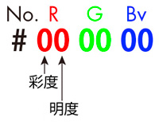
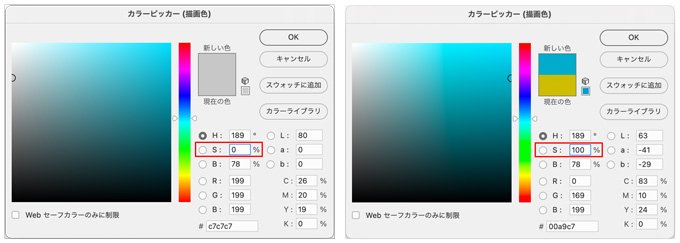
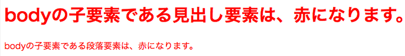

CSSとは
- CSS（Cascading Style Sheets）の略
- ウェブページやウェブアプリケーションのデザインやスタイルを指定する言語

- 空間（余白）
- 背景（色→画像）
- 枠線
- コンテンツ（文字）
の順に記述していくと、破綻しにくい記述が可能です
CSSの役割
- HTML要素の修飾（見栄えを作る）
- ブラウザには初期値として、HTMLプレビュー時には「文字の区別」ができるようなCSSが指定されています
最も重要な役割
- 情報（特に文字）を読みやすくするために、以下の３つのポイントの見栄えを工夫します
- 文字サイズ
- 文字色
- 余白
CSSの書く位置
- 外部ファイルに記述し読み込む（最も頻度が高い）
- head内部に「styleタグ」で「埋め込む（embed）」（場合によっては必要）
- tag内に直接記述（ほぼこの記述はしない）
文字色・背景色
- 16進数：hexadecimal number
- #：number
- 「0123456789ABCDEF」（16個）
- RGBを2個ずつの数字を割り振る
- 2個の左側の数字が明度(Brightness)、右側の数字が彩度(Saturation)
CSSで定義されている147色について
- redやgreenといった、CSSで定義されている色は以下でも確認することができます。全部で147色あるようです。
- http://www.147colors.com/
16進数のRGB(Red/Green/Blueviolet)
- 色をあらわす16進数の表記は、先頭から2桁ずつ赤、緑、青の色の強さをあらわします
- #FFFF00 だったら 赤=FF / 緑=FF / 青=00 となります
例
- #000000（黒）
- #FFFFFF（白）
- Hue（色相）・Brightness（明度） ・Saturation（彩度）


16進数演習
yizzle.comRGBA（不透明度あり）
- 不透明度（alpha）
- 完全透明：0 完全不透明：1 の間で指定します
h1 { color: rgba(100, 189, 178, 0.7); }
スタイルの継承（inheritance）
- CSSには親要素から子要素へとスタイルが継承される仕組みがあります
- この仕組のおかげで、同じ指定を繰り返さなくても効率よく指定ができます
<!DOCTYPE html> <html lang="ja"> <head> <meta charset="utf-8"> <title>スタイルの継承</title> <style> body { color: red; } </style> </head> <body> <h1>bodyの子要素である見出し要素は、赤になります。</h1> <p>bodyの子要素である段落要素は、赤になります。</p> </body> </html>

継承の有無
- 文字色、文字サイズなどの文字を装飾するプロパティ
- リストマーカーの種類、リストマーカーの画像などのリストを装飾するプロパティ
- テーブル枠の表示形式、テーブルの空セルの表示方法などのテーブル関連の一部プロパティ
- 通常は継承しないプロパティであっても、強制的に継承させることのできる値「inherit」
以上以外は、継承されません。